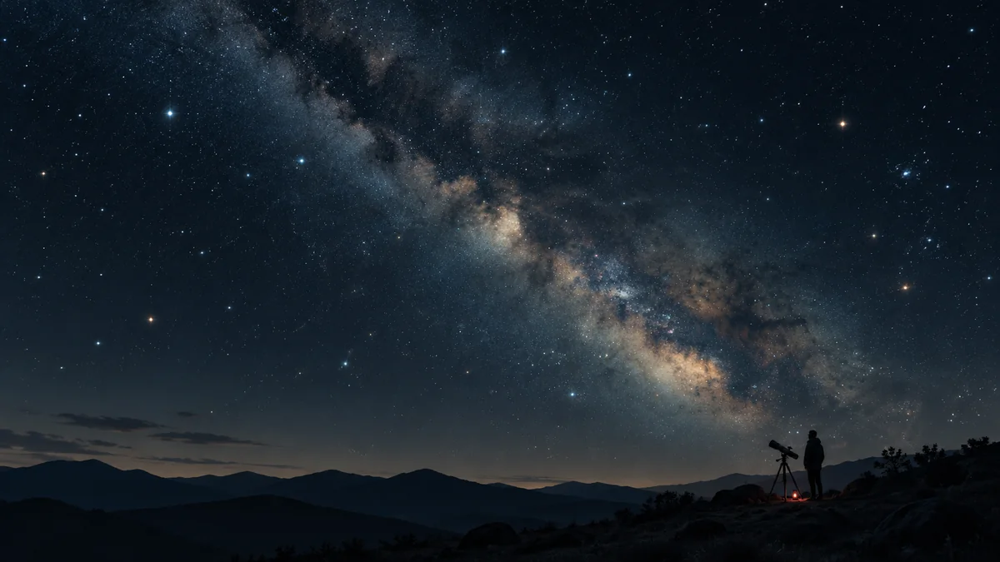

밤하늘을 보러 가면 왜 눈부터 기다려야 할까?
관측 장소에 도착하자마자 별이 적다고 실망할 필요는 없어요. 눈이 어둠에 익숙해지는 시간과 휴대폰 화면을 다루는 작은 습관이 희미한 별을 찾는 데 도움이 됩니다.

눈에도 밤을 준비할 시간이 필요해요
밝은 실내에서 나온 직후에는 밤하늘에 별이 몇 개 없는 것처럼 느껴질 수 있습니다. 이때 바로 장소를 옮기기보다 눈이 어둠에 익숙해질 여유를 주세요. 어두운 환경에서 약한 빛을 더 잘 감지하도록 눈이 적응하는 과정을 암순응이라고 부릅니다.
NASA의 관측 안내는 충분히 적응하는 데 30분 이상 걸릴 수 있다고 설명합니다. 정확히 30분에 준비가 끝나는 타이머는 아니에요. 관측을 시작할 때부터 희미한 대상을 서둘러 찾기보다, 먼저 밝은 별의 위치와 하늘의 큰 모양을 익혀보세요. 기다리는 시간도 관측의 일부가 됩니다.[1] [2]
별 지도를 확인한 뒤에는 화면을 쉬게 해주세요
눈이 어둠에 익숙해져도 밝은 휴대폰이나 자동차 전조등을 보면 그 상태가 흐트러질 수 있습니다. 별을 찾으려고 지도를 켰는데 화면을 오래 보는 일이 오히려 희미한 별을 찾는 데 방해가 되는 셈이죠. 필요한 방향과 대상을 미리 정해두면 현장에서 화면을 확인하는 횟수를 줄일 수 있어요.
예를 들어 출발 전에 관측 가이드에서 오늘 볼 대상 하나를 고르고, 지도는 필요한 순간에만 짧게 확인해보세요. 화면 밝기도 읽을 수 있는 범위에서 낮춥니다. 무조건 휴대폰을 쓰지 말자는 뜻은 아닙니다. 길 안내와 연락처럼 필요한 기능을 쓰되, 별을 보는 동안에는 밝은 화면을 계속 바라보지 않는 습관입니다.[2]
빨간색과 어두운 밝기를 함께 생각하세요
관측 모임에서 빨간 손전등을 쓰는 데에는 이유가 있습니다. NASA는 야간 시야에 미치는 영향이 작은 빨간 조명을 권하고, 동시에 가능한 한 아주 약한 빛을 사용하라고 안내해요. 따라서 조명을 고를 때에는 빨간색인지뿐 아니라 필요한 만큼 어둡게 조절할 수 있는지도 살펴보면 좋습니다.
종이 별 지도를 가져갔다면 손전등을 지도 쪽으로만 향하게 해보세요. 함께 관측하는 사람의 얼굴을 비추지 않고, 확인을 마치면 끄는 방식입니다. 이동할 때는 발밑을 확인할 수 있는 조명을 확보하세요. 어둠을 지키려다 넘어질 만한 곳으로 들어갈 필요는 없습니다.[1] [3]
별이 얼마나 더 보이는지 비교해보세요
작은 관측 목표를 하나 세워볼까요? 알아보기 쉬운 별 무리를 정한 뒤, 처음 도착했을 때와 잠시 기다린 뒤에 보이는 별을 비교해보는 겁니다. 밝은 별 옆에 희미한 점이 더 드러나는지 천천히 살펴보세요. 별의 이름을 모두 외울 필요는 없습니다.
다만 별이 적게 보이는 이유를 눈에만 돌리지는 마세요. 도시의 불빛과 구름도 볼 수 있는 별을 제한합니다. 같은 방향을 보면서 주변 조명과 구름도 함께 메모하면 차이를 이해하기 쉬워요. 눈의 적응과 하늘의 조건을 함께 살피는 것이 다음 관측을 준비하는 좋은 출발점입니다.[2] [3]
이 이야기를 확인한 자료
- NASA · How to Find Good Places to Stargaze ↗자료 확인 2026.09.27 · 원문 새 탭
- NASA Night Sky Network · Stargazing for Beginners ↗자료 확인 2026.09.27 · 원문 새 탭
- NASA Night Sky Network · Check Your Sky Quality with Orion! ↗자료 확인 2026.09.27 · 원문 새 탭
자료의 날짜와 적용 범위를 함께 확인해주세요. 오류 제보하기 →